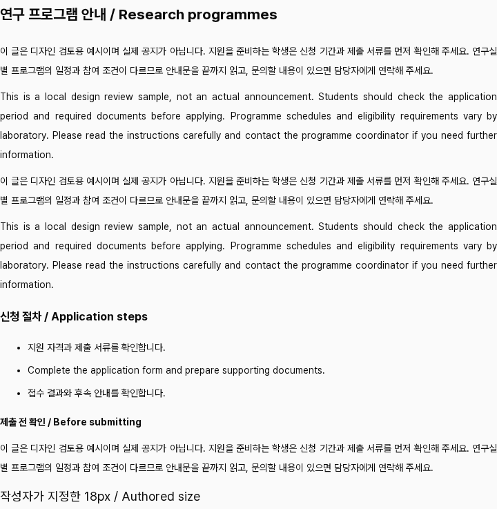

읽는 본문의 밀도 정하기
서체 DS-006 확정 · 크기 비교 · 앱 미적용기반 색은 승인한 범위까지 적용했고, 이제 글자의 역할과 읽기 밀도를 정한다. 첫 질문은 긴 글의 기본 크기다.
왜 본문부터 보는가
현재 상태: 본문은 14px·줄높이 28px이고 버튼·라벨도 14px이다. 같은 크기 자체가 문제는 아니지만, 긴 글과 짧은 조작 문구의 기준은 각각 정할 필요가 있다.
추천 B의 이유: 읽는 글을 16px로 조금 키우고 기존 줄높이 비율 2를 유지한다. 페이지 제목·메뉴·입력은 그대로 두어 조작 화면의 밀도는 유지한다.
얻는 것과 비용: 본문 글자가 커지는 대신 줄바꿈과 스크롤이 늘어난다. 이번 표본 높이는 데스크톱 약 25%, 모바일 약 21% 증가했다. 기존의 작고 조밀한 인상이 더 중요하면 A가 맞다.
읽기 속도 개선을 검증한 사용자 실험이나 접근성 위반 판정이 아니라, 읽기 밀도를 선택하는 디자인 제안이다. 특정 크기를 필수값으로 제시하지 않는다.
01. 현재 위계에서 이번에 정할 위치
| 역할 | 현재 앱의 대표 값 | 이번 범위 |
|---|---|---|
| 카테고리 제목 | 모바일 32 / 데스크톱 64px | 유지 · 후속 검토 |
| 일반 페이지 제목 | 모바일 24 / 데스크톱 32px | 유지 · 후속 검토 |
| 공지 고유 제목 | 20px / 600 / 줄높이 28px | 유지 · 후속 검토 |
| 읽는 본문 | 14px / 400 / 줄높이 28px | 이번 판단 |
| 라벨·입력·버튼 | 라벨·버튼 14px, 입력 13px | 유지 · 후속 검토 |
02. 같은 글을 두 밀도로 보기
A · 현재 밀도 유지
지원자는 신청 기간과 제출 서류를 먼저 확인해 주세요. 프로그램의 일정과 참여 조건이 다르므로 안내문을 끝까지 읽고 담당자에게 문의해 주세요.
Read the application requirements carefully and prepare your supporting documents before submitting the form.
B · 글자를 조금 크게 · 추천
지원자는 신청 기간과 제출 서류를 먼저 확인해 주세요. 프로그램의 일정과 참여 조건이 다르므로 안내문을 끝까지 읽고 담당자에게 문의해 주세요.
Read the application requirements carefully and prepare your supporting documents before submitting the form.
03. 실제 앱의 긴 글 비교
같은 로컬 공지의 기본 본문 크기만 바꾼 비교다. 한국어·영어 문단, 제목·목록·굵은 강조와 작성자 지정 18px를 함께 넣었다. 프레임 안을 스크롤해 긴 글의 흐름을 볼 수 있다.

본문 원본 크기로 보기 · 페이지 제목과 함께 보기 · 측정 기록
{kind=link}
{kind=link}
| 화면 | A → B 본문 높이 | 첫 한국어 문단 |
|---|---|---|
| 데스크톱 | 736.5 → 924.1px (+25.5%) | 2 → 3줄 |
| 모바일 | 1142.5 → 1388.1px (+21.5%) | 4 → 5줄 |
본문 안의 상대 크기 제목도 함께 커진다. 기본 h2는 21→24px, h3는 약 16.38→18.72px이며 제목 주변의 상대 여백도 늘어난다. 페이지 제목과 공지 고유 제목은 그대로다. 작성자 지정 18px 표본도 18px로 유지됐다.
04. 적용 범위와 다음 순서
B를 선택하면 먼저 공지 상세의 공개 읽기 본문에 적용한다. 다른 소개·프로필·연구·학사 본문은 배치를 확인한 뒤 도입한다. A를 선택하면 기존 밀도를 기준으로 문서화한다.
페이지 제목·메뉴·폼·버튼과 에디터는 이번에 바꾸지 않는다. 선택한 본문을 확인한 뒤 제목과 보조 정보의 위계를 이어서 검토한다. 행간·문단 간격·정렬을 포함한 모든 타이포 규칙이 이번에 끝나는 것은 아니다.
이번 판단 · T-Q2
A의 14px/28px를 유지할까, B의 16px/32px로 읽는 글을 조금 키울까?
추천은 B야. 글자가 커지는 이점과 늘어나는 스크롤을 함께 보고 골라줘.